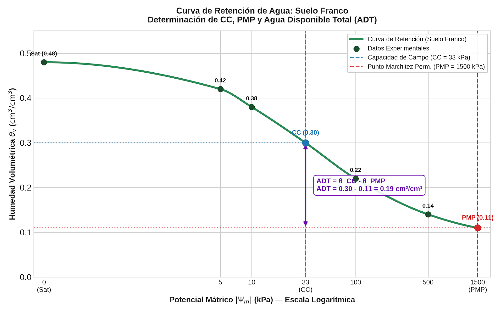

Sesión 2.3: Contenido de humedad y parámetros hídricos
Sesiones 2.1-2.2 — Lo que ya sabemos:
- El suelo tiene textura, estructura y porosidad → retiene agua
- Da, Dr y P se miden con cilindro y picnómetro
- Da alta = compactación = menos poros
Hoy: Medimos cuánta agua hay realmente en el suelo.
| Unidad | 2 — El agua en el suelo |
| Sesión | 2.3 |
| RAA | RAA3, RAA4 |
| Duración | ~90 minutos |
| Contenido | θg, θv, Saturación, Capacidad de Campo, Punto de Marchitez Permanente |
Al finalizar esta sesión, serás capaz de:
Definición: Masa de agua por unidad de masa de suelo seco a 105°C.
\[\theta_g = \frac{M_{agua}}{M_{seco}} = \frac{M_{humedo} - M_{seco}}{M_{seco}} \quad [\text{g/g}]\]
Procedimiento estándar (método gravimétrico):
1. Extraer muestra de suelo con barreno o pala (NO usar cilindro si solo se mide θg)
2. Colocar en bolsa hermética inmediatamente (evitar evaporación)
3. Pesar en balanza → Mhúmedo (precisión 0.1 g para >50 g de muestra)
4. Secar en estufa a 105°C durante 24 horas (o hasta peso constante)
5. Enfriar en desecador y pesar → Mseco
6. Calcular: θg = (Mhúmedo - Mseco) / Mseco
La temperatura de secado es crítica:
| Temperatura | ¿Qué se evapora? | Uso |
|---|---|---|
| < 60°C | Solo agua libre | No estándar — incompleto |
| 105°C | Agua libre + agua capilar | Estándar agronómico (FAO, USDA) |
| > 200°C | Agua estructural de arcillas | Sesgo: sobreestima θg |
| > 400°C | Oxidación de materia orgánica | Sesgo grave: pérdida de masa no es agua |
Precaución: Suelos con yeso (CaSO₄·2H₂O) pierden agua de cristalización a >80°C. En esos casos, secar a 60°C.
Datos de una muestra:
- Masa de suelo húmedo (bolsa + muestra) — tara de bolsa: 95.2 - 7.7 = 87.5 g
- Masa de suelo seco (105°C, 24h) — tara: 79.7 - 7.7 = 72.0 g
Cálculo:
\[\theta_g = \frac{87.5 - 72.0}{72.0} = \frac{15.5}{72.0} = 0.2153 \text{ g/g}\]
En porcentaje: \(\theta_g(\%) = 21.5\%\)
Interpretación física: Por cada kg de suelo seco, esta muestra contiene 0.215 kg (215 g) de agua.
Una muestra húmeda pesa 96 g; tras secar a 105°C pesa 80 g.
Resuelve en 3 minutos.
Definición: Volumen de agua por unidad de volumen total de suelo.
\[\theta_v = \frac{V_{agua}}{V_{total}} \quad [\text{cm}^3/\text{cm}^3 \text{ o m}^3/\text{m}^3]\]
Relación fundamental con θg:
\[\theta_v = \theta_g \times \frac{D_a}{\rho_{agua}}\]
Dado que \(\rho_{agua} \approx 1.0\) g/cm³:
\[\theta_v \approx \theta_g \times D_a\]
θv es el parámetro de interés agronómico (mm de agua por metro de suelo)
θg solo no me dice cuánta agua hay en el suelo como recurso:
| Suelo | θg (g/g) | Da (g/cm³) | θv (cm³/cm³) | Lámina en 1 m (mm) |
|---|---|---|---|---|
| Arenoso | 0.15 | 1.60 | 0.24 | 240 |
| Franco | 0.25 | 1.35 | 0.34 | 340 |
| Arcilloso | 0.40 | 1.10 | 0.44 | 440 |
Aunque el suelo arenoso tiene el menor θg, su mayor Da compensa parcialmente. Pero el arcilloso sigue teniendo más agua total porque su alta θg domina sobre su baja Da.
La lámina de agua (L) es la forma más útil de expresar θv para riego:
\[L = \theta_v \times Z \quad [\text{mm}]\]
Donde:
- θv en cm³/cm³ (o m³/m³)
- Z = profundidad del suelo en mm
Ejemplo: θv = 0.305 cm³/cm³, Z = 600 mm (60 cm)
\[L = 0.305 \times 600 = 183 \text{ mm}\]
Interpretación agronómica: Hay 183 litros de agua por m² de suelo (1 mm sobre 1 m² = 1 L). Si el cultivo consume 6 mm/día, esta agua duraría 183/6 ≈ 30 días sin riego ni lluvia.
| Muestra | θg (g/g) | Da (g/cm³) | Profundidad (cm) |
|---|---|---|---|
| Arenoso | 0.12 | 1.60 | 50 |
| Franco | 0.25 | 1.35 | 70 |
| Arcilloso | 0.38 | 1.10 | 60 |
Calcule para cada suelo:
1. θv en cm³/cm³
2. Lámina de agua (mm)
3. ¿En cuál suelo hay MÁS agua total (mm) en el perfil?
Resuelva en 5 minutos.
| Parámetro | Símbolo | Ψm (kPa) | Significado físico |
|---|---|---|---|
| Saturación | S | 0 | Todos los poros llenos de agua; θv = P |
| Capacidad de Campo | CC | -33 | Macroporos drenados; agua retenida contra gravedad |
| Punto de Marchitez Permanente | PMP | -1500 | Planta no puede extraer más agua; marchitez irreversible |
Estos tres puntos dividen el agua del suelo en tres categorías con distinta disponibilidad.
Ψm = 0 kPa — θv = Porosidad total
¿Cuándo ocurre?
- Inmediatamente después de un riego abundante
- Después de lluvia intensa
- En el nivel freático
¿Es un estado deseable? NO por mucho tiempo:
- Todos los poros están llenos de agua → cero oxígeno
- Las raíces respiran → hipoxia en 24-48h si no hay drenaje
- Cultivos sensibles (palto, cítricos) sufren daño rápido
- Excepción: arroz (cultivo adaptado a inundación)
El drenaje: El agua en macroporos drena por gravedad en 24-48h → se llega a CC.
Después de saturar el suelo, el agua drena en fases:
| Tiempo post-saturación | ¿Qué drena? | Ψm aproximado |
|---|---|---|
| 0 - 2 horas | Macroporos gruesos (>100 μm) | 0 a -1 kPa |
| 2 - 12 horas | Macroporos medianos (30-100 μm) | -1 a -10 kPa |
| 12 - 48 horas | Macroporos finos (10-30 μm) | -10 a -33 kPa |
| > 48 horas | Ya estamos en CC — drenaje despreciable | ≈ -33 kPa |
Velocidad de drenaje:
- Suelo arenoso: llega a CC en ~12-24h
- Suelo franco: ~24-48h
- Suelo arcilloso: ~48-72h (drenaje lento por microporos)
Definición clásica (Veihmeyer & Hendrickson, 1931): Contenido de agua que queda en el suelo 2-3 días después de saturarlo, cuando el drenaje gravitacional se ha vuelto despreciable.
Ψm = -33 kPa (≈ -0.033 MPa, ≈ -0.33 bares)
Valores típicos:
| Textura | CC (cm³/cm³) |
|---|---|
| Arenoso | 0.08 - 0.15 |
| Franco-arenoso | 0.15 - 0.22 |
| Franco | 0.25 - 0.35 |
| Franco-arcilloso | 0.30 - 0.40 |
| Arcilloso | 0.35 - 0.50 |
No exactamente. La definición original (-33 kPa) se estableció en suelos francos.
| Textura | Ψm a CC real (aproximado) | ¿Por qué? |
|---|---|---|
| Arenoso | -10 a -20 kPa | Drena más rápido — a -33 kPa ya está más seco de lo que llamamos CC |
| Franco | -33 kPa | El estándar original — buena aproximación |
| Arcilloso | -10 a -20 kPa | Los microporos drenan muy lento — el “drenaje despreciable” se alcanza antes |
Convención del curso: Usamos -33 kPa como CC estándar para todos los suelos, reconociendo que es una aproximación. Es el estándar agronómico internacional.
Definición: Contenido de agua del suelo en el cual una planta indicadora se marchita y no se recupera al colocarla en atmósfera saturada (100% HR) durante 12 horas.
Ψm = -1500 kPa (≈ -1.5 MPa, ≈ -15 bares)
¿Por qué -1500 kPa?
- Es el valor determinado experimentalmente por Briggs & Shantz (1912) usando girasol como planta indicadora
- A esta succión, la mayoría de las plantas mesófitas (cultivos) no pueden extraer agua
- Plantas xerófitas (cactus, algunas nativas) pueden extraer hasta -3000 a -5000 kPa
| Textura | PMP (cm³/cm³) |
|---|---|
| Arenoso | 0.02 - 0.05 |
| Franco-arenoso | 0.05 - 0.08 |
| Franco | 0.09 - 0.15 |
| Franco-arcilloso | 0.15 - 0.20 |
| Arcilloso | 0.18 - 0.30 |
Observación clave: El PMP varía mucho más con la textura que la CC. ¿Por qué?
- PMP depende del área superficial (adsorción fuerte)
- La arcilla tiene >1000× más área superficial que la arena
- → PMP es alto en arcillosos (mucha agua “atrapada”)
- → PMP es muy bajo en arenosos (casi toda el agua drena o está disponible)
| Categoría | Ψm (kPa) | ¿Disponible para la planta? | Destino |
|---|---|---|---|
| Agua gravitacional | 0 a -33 | No — drena antes de ser absorbida | Drenaje profundo, recarga de acuíferos |
| Agua disponible (ADT) | -33 a -1500 | Sí — retenida en mesoporos, extraíble por raíces | Transpiración del cultivo |
| Agua no disponible | < -1500 | No — adsorbida fuertemente en microporos | Permanece en el suelo |
ADT = CC - PMP
Para un suelo franco: Saturación θ = 0.48, CC = 0.30, PMP = 0.11.
Resuelve en 3 minutos.
Datos de curva de retención — suelo franco:
| Ψm (kPa) | 0 | 5 | 10 | 33 | 100 | 500 | 1500 |
|---|---|---|---|---|---|---|---|
| θv (cm³/cm³) | 0.48 | 0.42 | 0.38 | 0.30 | 0.22 | 0.14 | 0.11 |
Cálculos:
- CC = θv a -33 kPa = 0.30 cm³/cm³
- PMP = θv a -1500 kPa = 0.11 cm³/cm³
- ADT = CC - PMP = 0.30 - 0.11 = 0.19 cm³/cm³
Interpretación: De toda el agua que este suelo puede contener (θv), solo el 40% (0.19 / 0.48) está disponible para la planta.

Datos de un perfil de suelo:
| Horizonte | Prof. (cm) | CC (cm³/cm³) | PMP (cm³/cm³) | Da (g/cm³) |
|---|---|---|---|---|
| Ap (0-25) | 25 | 0.33 | 0.14 | 1.30 |
| Bt (25-55) | 30 | 0.28 | 0.17 | 1.40 |
| C (55-90) | 35 | 0.22 | 0.12 | 1.50 |
Calcule:
1. ADT por horizonte (cm³/cm³)
2. Lámina de ADT por horizonte (mm)
3. Lámina total de ADT en el perfil (mm)
4. Si el cultivo consume 5.5 mm/día, ¿cuántos días de agua disponible tiene?
| Término | Símbolo | Unidad | Definición |
|---|---|---|---|
| Contenido gravimétrico | θg | g/g | Masa de agua / masa de suelo seco |
| Contenido volumétrico | θv | cm³/cm³ | Volumen de agua / volumen de suelo |
| Lámina de agua | L | mm | Altura de agua en un perfil de suelo |
| Saturación | S | cm³/cm³ | θv cuando todos los poros están llenos |
| Capacidad de campo | CC | cm³/cm³ | θv después que drena el agua gravitacional |
| Punto de marchitez permanente | PMP | cm³/cm³ | θv mínimo del cual la planta puede extraer agua |
| Agua disponible total | ADT | cm³/cm³ | CC - PMP |
θg = (M_húmedo - M_seco) / M_seco — método gravimétrico (referencia estándar)
θv = θg × Da — el parámetro que importa para riego
Lámina (mm) = θv × Z(mm) — cuánta agua hay en el perfil
Saturación (0 kPa): θv = P, sin aire → hipoxia si persiste
CC (-33 kPa): macroporos drenados, agua retenida en mesoporos — límite superior de agua disponible
PMP (-1500 kPa): agua tan fuertemente retenida que la planta no la extrae — límite inferior
ADT = CC - PMP — el agua que realmente puede usar el cultivo
Sesión 2.4: Agua disponible total (ADT), agua fácilmente aprovechable (AFA) y monitoreo de humedad.
→ ¿Toda el ADT está igualmente disponible? No. → ¿Cuánto debe consumir la planta antes de regar? AFA. → ¿Cómo medimos θv en tiempo real? Sensores.
Taller 2 (Google Colab): Abre taller-02.ipynb — curva de retención, ADT y AFA.
Un suelo tiene θg = 0.28 g/g y Da = 1.3 g/cm³. Calcule θv. ¿Cuántos mm de agua hay en 60 cm de profundidad?
¿Por qué CC = -33 kPa y no 0 kPa? ¿Qué pasó con el agua entre 0 y -33 kPa?
Un suelo arenoso (CC=0.12, PMP=0.03) y uno arcilloso (CC=0.40, PMP=0.21) tienen la misma θv = 0.30 cm³/cm³. ¿En cuál hay más agua disponible? ¿Por qué?
¿Por qué el PMP es más alto en suelos arcillosos que en arenosos?
Si un suelo llega a PMP, ¿la planta muere inmediatamente? Explique la diferencia entre marchitez temporal y permanente.
Calcule la lámina de agua (mm) para un perfil de 80 cm con θv promedio de 0.25 cm³/cm³. Si el cultivo extrae 4 mm/día, ¿para cuántos días alcanza?
Explique por qué la temperatura de secado debe ser exactamente 105°C para determinar θg.
TAG2027 — Relación Suelo Agua Planta | UDLA